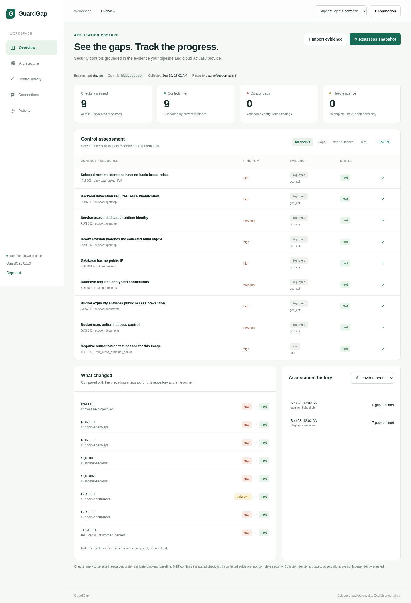
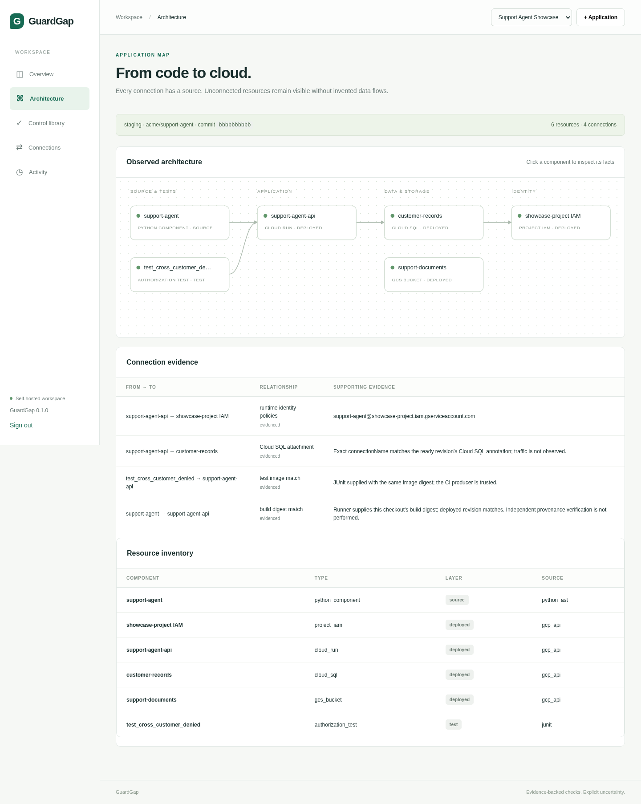
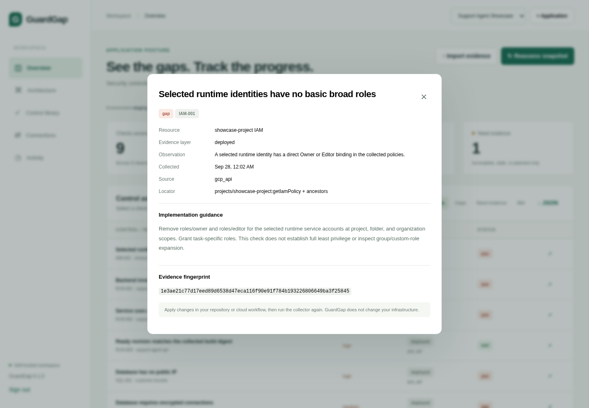
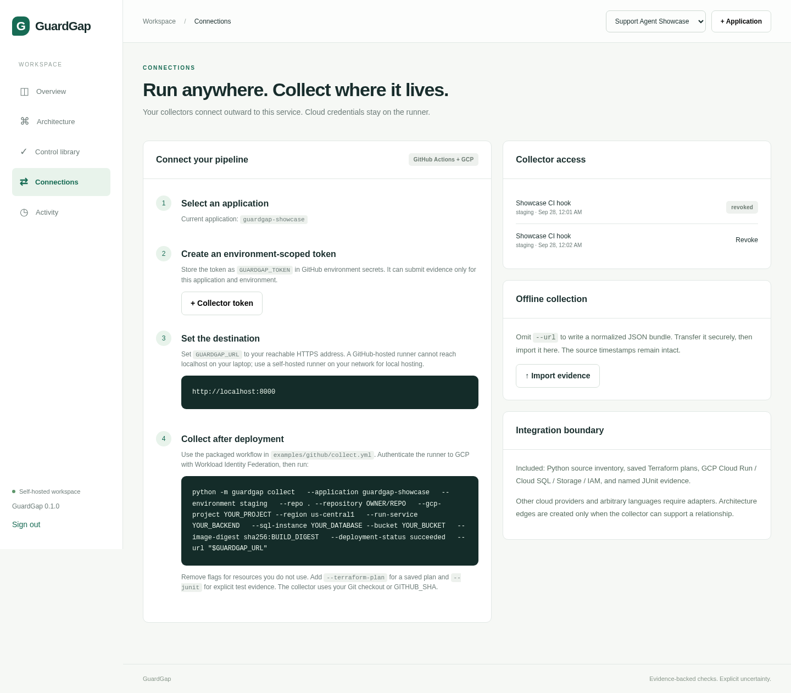
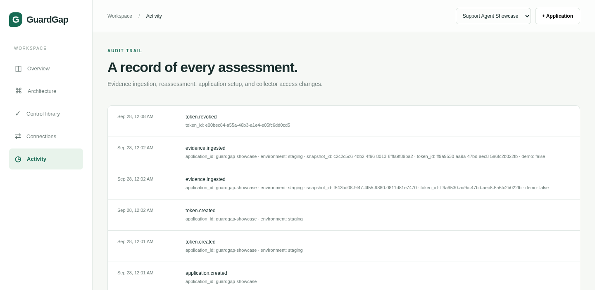

Run date: September 28, 2026
Application: Support Agent Showcase (guardgap-showcase)
Environment: staging
Repository identity: acme/support-agent
GuardGap successfully processed two complete synthetic deployment snapshots through the same collector, scoped-token API, database, assessment engine, and dashboard used for a real integration.
| Snapshot | Met | Gaps | Unknown | Outcome |
|---|---|---|---|---|
| Before remediation | 1 | 7 | 1 | Broad IAM, public invocation, public and unencrypted SQL, object ACLs, and a failed cross-customer authorization test were detected. |
| After remediation | 9 | 0 | 0 | All nine supported controls were backed by current matching evidence. |
The second assessment recorded eight transitions: seven gap → met changes and one unknown → met change. The immutable build check remained met in both snapshots.

The showcase uses the runnable support-agent fixture in examples/support-agent and the packaged GitHub Actions collector hook in examples/github/collect.yml. No real cloud account was changed. The GCP API responses are synthetic, while source scanning, JUnit parsing, token authentication, HTTP ingestion, persistence, comparison, rendering, and audit logging are executed by the live GuardGap service.
guardgap-showcase workspace was created through the authenticated application API.staging collector token was created through the token API.test_cross_customer_denied JUnit result and tied it to the same image digest as the ready Cloud Run revision.POST /api/ingest with the scoped bearer token.GitHub Actions / trusted runner
├── Python AST inventory ───────────────┐
├── GCP read-only observations ─────────┤
├── build + deployed image digest ──────┼──> normalized evidence bundle
└── named JUnit authorization result ───┘ │
│ scoped token
v
GuardGap ingest API -> immutable snapshot -> control engine -> report history -> dashboard
The final bundle contains six resources and four evidence-backed connections:
| From | To | Relationship | Evidence basis |
|---|---|---|---|
support-agent source |
support-agent-api |
Build digest match | Collector-supplied build digest matches the ready revision digest. |
test_cross_customer_denied |
support-agent-api |
Test image match | JUnit test digest matches the ready deployed image. |
support-agent-api |
customer-records |
Cloud SQL attachment | Exact Cloud SQL connection name matches the ready revision annotation. |
support-agent-api |
showcase-project IAM |
Runtime identity policies | Ready revision service account is correlated with collected IAM policies. |
The Storage bucket remains visible in inventory without an invented application data-flow edge. This is intentional: GuardGap only draws relationships supported by collected configuration.

The first deployment deliberately contained:
Each finding exposes the normalized observation, evidence source, locator, timestamp, fingerprint, and concrete implementation guidance.

The second snapshot represented these deployed changes:
| Control | Before | After | Evidence change |
|---|---|---|---|
| IAM-001 | Gap | Met | Runtime account no longer has direct Owner or Editor bindings. |
| RUN-001 | Gap | Met | Invoker IAM is enabled and no public invoker binding is present. |
| RUN-002 | Gap | Met | Ready revision uses a dedicated service account. |
| RUN-003 | Met | Met | Ready revision still matches the collector-supplied immutable build digest. |
| SQL-001 | Gap | Met | Public IPv4 is disabled and no public address is present. |
| SQL-002 | Gap | Met | SSL mode is ENCRYPTED_ONLY. |
| GCS-001 | Unknown | Met | Public access prevention is explicitly enforced. |
| GCS-002 | Gap | Met | Uniform bucket-level access is enabled. |
| TEST-001 | Gap | Met | The named cross-customer denial test passes against the deployed image digest. |
The dashboard displays both reports in history and shows each transition in the “What changed” panel.
The Connections view produces the command for the selected application and documents the GitHub Actions + GCP integration boundary. Collector credentials are scoped to one application and environment. The unused setup token from this run was revoked; one active showcase token remains, demonstrating that revocation is retained independently of assessment history.

The production-ready hook template is examples/github/collect.yml. It authenticates to GCP through Workload Identity Federation, runs the collector after deployment, generates a Markdown assessment, and uploads the normalized evidence as a workflow artifact.
The live audit trail records application creation, token creation and revocation, and both evidence-ingestion events. Snapshot and token identifiers are recorded without exposing the bearer-token value.

| Artifact | Purpose |
|---|---|
| evidence-before.json | Normalized collector bundle submitted for the vulnerable deployment. |
| evidence-after.json | Normalized collector bundle submitted for the remediated deployment. |
| gcp-before.json / gcp-after.json | Synthetic read-only GCP API observations consumed by the real normalizer. |
| authorization-before.xml / authorization-after.xml | Failed and passing named JUnit authorization evidence. |
| assessment-before.md / assessment-after.md | Standalone CLI reports generated from each evidence bundle. |
| showcase-summary.json | Report IDs, snapshot IDs, counts, transitions, and architecture totals. |
| SHA256SUMS.txt | SHA-256 fingerprints for the source evidence artifacts. |
/healthz returned GuardGap 0.1.0.7 gaps / 1 met / 1 unknown → 9 met transition.http://localhost:8000.This package demonstrates GuardGap’s software flow and supported control logic. The GCP observations are intentionally synthetic and do not prove that a real GCP project has these settings. A production showcase should run the same packaged collector with a read-only GCP identity after an actual deployment. A MET result confirms only the named predicate within collected evidence; it is not a complete security certification.